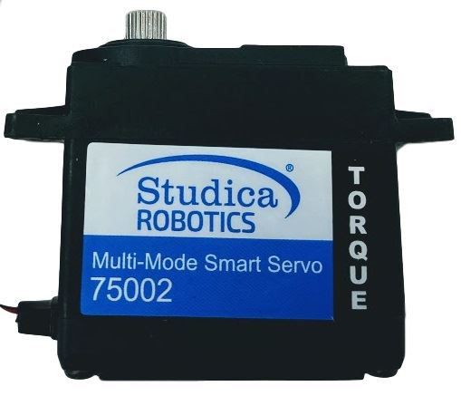
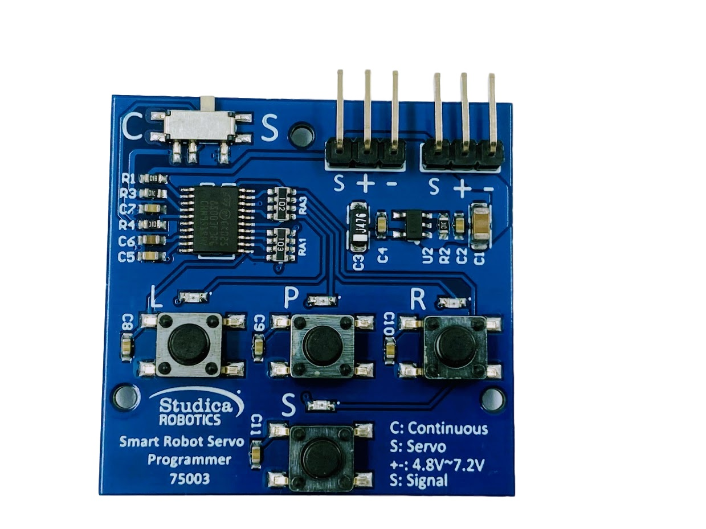

伺服馬達（Servo Motor）
| Multi-Mode Smart Servo | Smart Robot Servo Programmer |
|---|---|
 |  |
1. 它是做什麼的？
伺服馬達可以轉到指定的角度並停住，常用在夾爪、手臂、升降機構、轉向。和直流馬達最大的不同是：它自己知道自己現在在哪個角度。
2. 原理
伺服馬達裡面其實有四樣東西：
- 小型直流馬達
- 減速齒輪組（放大扭力）
- 電位器（量測輸出軸目前角度）
- 控制電路
控制電路會比較「目標角度」和「目前角度」，差多少就驅動馬達補多少，直到兩者相等 —— 這就是閉迴路控制（見 閉迴路控制（Closed-loop Control））。
PWM 控制訊號
伺服用脈波寬度表示目標角度，訊號週期通常是 20 ms（50 Hz）：
PWM 的完整說明見 PWM（脈波寬度調變）
| 脈波寬度 | 標準伺服的意思 |
|---|---|
| 約 500–1000 µs | 一端極限 |
| 1500 µs | 中間位置 |
| 約 2000–2500 µs | 另一端極限 |
三種常見類型
| 類型 | 行為 |
|---|---|
| 標準型（角度型） | 轉到指定角度，常見 180° |
| 連續旋轉型 | 不控角度，脈波寬度變成速度與方向（1500 µs = 停） |
| 智慧型（可程式） | 可用編程器切換以上模式、設定角度範圍 |
3. 重要參數
| 參數 | 意思 |
|---|---|
| 工作電壓 | 常見 4.8–7.4V |
| 扭力 (kg-cm) | 「距離軸心 1 cm 處可以抬起幾公斤」。距離越遠能抬的越少 |
| 速度 (sec/60°) | 轉 60° 需要幾秒 |
| 角度範圍 | 可轉動的最大角度 |
| 齒輪材質 | 塑膠（輕、易崩齒）/ 金屬（耐用） |
扭力與單位換算見 減速比與扭力（Gear Ratio & Torque）
4. Studica Multi-Mode Smart Servo
| 項目 | 規格 |
|---|---|
| 模式 | 標準模式、連續旋轉模式、自訂角度模式 |
| 標準模式角度 | ±150°（共 300°） |
| 脈波範圍 | 500–2500 µs，中位 1500 µs |
| 工作電壓 | 4.8–7.2V（依編程器標示） |
| 堵轉扭力 | 6V：約 21.6 kg-cm（300 oz-in）；4.8V：約 13 kg-cm |
| 減速比 | 1:67，全鋼齒輪、雙滾珠軸承 |
| 輸出軸 | 25T 齒 |
| 重量 | 64 g |
切換模式：Smart Robot Servo Programmer
- 用 Studica 的伺服編程器設定模式（Standard / Continuous / Angular）。
- 編程器需要接 6V 電池盒供電。
- 步驟：伺服接上編程器 → 選模式（自訂角度模式可設定左右極限）→ 按下寫入 → 拔下來接回控制器。
- ⚠️ 模式是存在伺服裡的，換到別台機器人前記得確認目前是哪個模式，不然「角度型」可能變成「一直轉」。
5. 接腳格式（3 線）
| 線色（常見） | 功能 |
|---|---|
| 棕 / 黑 | GND |
| 紅 | 電源 V+（中間那條） |
| 橘 / 黃 / 白 | PWM 訊號 |
- 在 VMX 機器人控制器（Studica VMX） 上接 3-pin PWM 排針（High Current DIO 或 Flex DIO），注意訊號線方向對齊板上標示。
- 電源在中間，所以插反通常不會短路，但伺服不會動；插錯位置（錯排）才危險。
6. 安全使用
- 不要讓伺服長時間頂住（例如夾爪夾緊還一直出力），會過熱、燒毀。
- 多顆伺服同時動作電流很大，控制器的 5V 可能供不起，需要獨立的伺服電源（BEC / 穩壓）。
- 第一次上電前先把機構拆開或確認範圍，避免伺服一開機就衝到極限撞壞機構。
- 不要用手硬轉伺服輸出軸，容易崩齒。
- 確認目前的模式（標準 / 連續）再上機。
7. 優缺點
| 優點 | 缺點 |
|---|---|
| 控制角度簡單，一條訊號線搞定 | 角度範圍有限（連續模式則失去角度控制） |
| 內建閉迴路，免寫控制程式 | 一般伺服沒有回授給控制器，不知道是否真的到位 |
| 體積小、扭力大 | 長時間出力會過熱 |
| 精度受電位器與齒輪間隙影響 |
8. 常見問題
- 伺服一直抖 → 負載太重、電源不足、或卡在機構極限。
- 完全不動 → 線插反、沒電源、模式不對。
- 一直轉不停 → 被設定成連續旋轉模式。